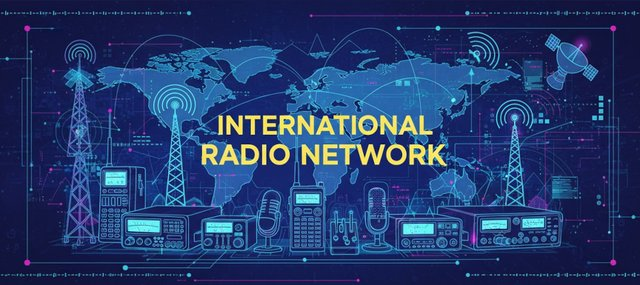

IRN Connections

Zello? TeamSpeak? DMR? Allstar? You may connect to the IRN using any of these modes, and more!
In collaboration with our partners, we are pleased to offer connections through TeamSpeak 3, Zello, Allstar, DMR as well as other modes. Some connections are accessible only to licensed amateur radio operators, because the networks are linked to amateur-only facilities, such as DMR and Allstar. Others are open to all licensed and unlicensed operators.
Licensed users
- TeamSpeak 3 - KB1 MULTIMODE LINKS KC1MUV
- Zello - ZMR 851.900 and KB1 Channel
- Allstar - Node 552360
- Echolink - KC1MUV-L, node number 663242
- DMR System X - TG 31320 (see below)
- DMR TGIF - Talkgroup 31320
- DMR Quadnet - Talkgroup 31320
- Yaesu YSF Reflector - YSF31320 - US-IRN
- The Peanut (by PA7LIM) - DMR31320
- DMR Amcomm - TG 31320
- DMR Hamnet - TG 31320
Hotspot connection for System X - For Pi-Star users it’s listed in FreeSTAR_Ohio. For WPSD users it’s listed in SystemX under Ohio.
Password / Security: passw0rd
IRN DMR Server (SystemX_Ohio)
Dashboard: https://digital.irn.radio/dashboard
We are very grateful to Shane M0VUB and the Freestar System X Network for their work with us on our digital platform upgrade and the addition of System X to our list of connections.
For more information about System X please visit www.freestar.network
All users
- TeamSpeak 3 - IRN QSO and Nets
- Zello - International Radio Network and ZMR 851.065
Zello ‘International Radio Network’ channel is permanently connected to the ‘IRN QSO and Nets’ channel on TeamSpeak 3.
Please click on the link below to view a PDF version of our list of current connections.